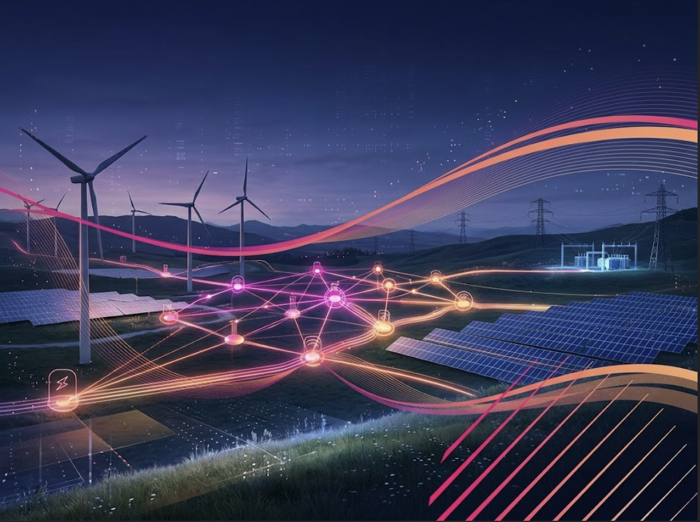

Amazon LEO: Market Entry Strategy in Italy
Comprehensive market entry plan and hybrid expansion strategy to bridge the rural digital divide via LEO satellites and AWS cloud integration in Italy.
View Strategy PDF →From navigating international trade regulations and supply chains to designing scalable business development models. Explore my portfolio of master's projects where global commerce meets commercial reality.
Import/export operations, customs compliance, Incoterms 2020 and multi-modal logistics coordination.
Cross-border market entry, B2B lead generation, strategic partnerships and channel expansion.
Cost optimization, vendor negotiation, market assessment and data-driven operational scaling.
Comprehensive market entry plan and hybrid expansion strategy to bridge the rural digital divide via LEO satellites and AWS cloud integration in Italy.
View Strategy PDF →
Strategic analysis and 2025-2027 plan evaluation focusing on European electricity grid leadership, portfolio optimization, and asset rotation.
View Project PDF →Evaluation of alliances, joint ventures, and M&A strategies in the global wine industry, benchmarking premiumization and lifestyle ecosystem models.
View Project PDF →Comprehensive market entry strategy, comparative market analysis for target selection, pricing strategy, Incoterms definition, and full export logistics cost calculation.
View Strategy PDF →